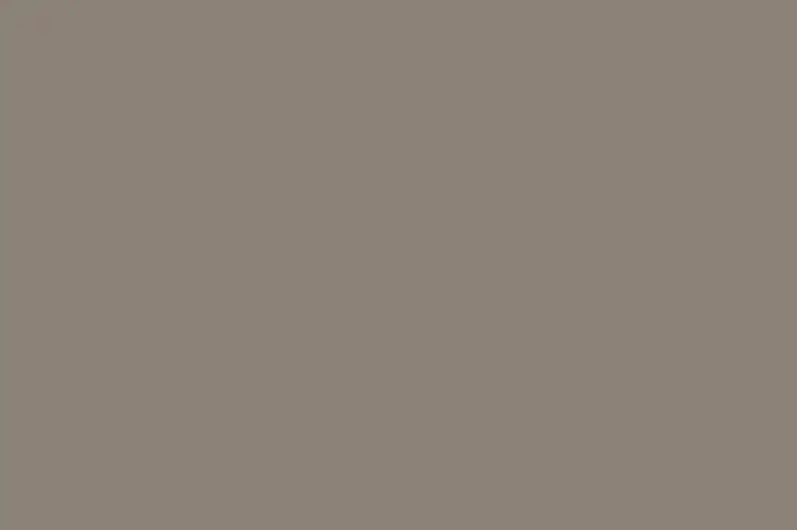
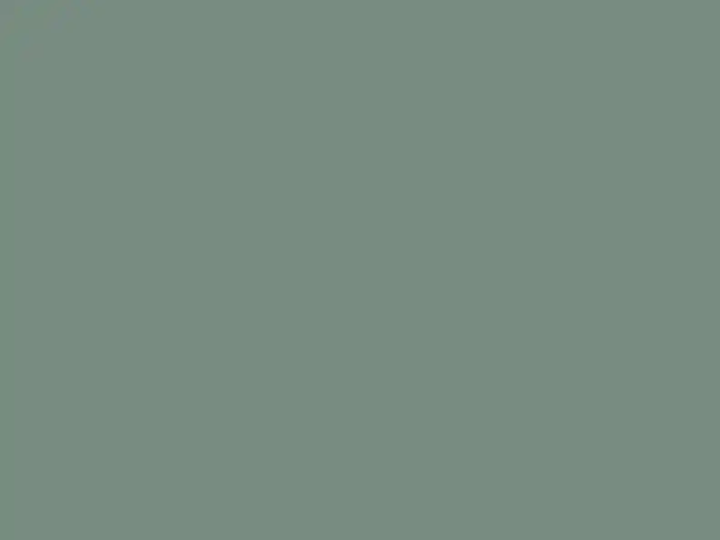

A — THE LIVE DEFECT. `low` in a shaped box, declared 1200x800 for a 1024x683 file.

Must fire check 13 ONCE (R2: `low` preserves the source aspect) and check 14 ONCE (R6: 17.2% out on width). Must NOT fire check 4b — 1200/800 and 1024/683 are both 1.50:1, and that agreement is exactly why a ratio check never saw this.
B — THE FIX. The named 792x594 rendition in a 4:3 box, declared at its real size.

SILENT on both. One case A and one case B is the whole discriminator.
C — R2 ALONE. A named crop is not enough if the declared size is a constant.
Check 13 SILENT (the variant is a named crop), check 14 FIRES ONCE (1200 declared for a 792px file, 51.5% out). 1200/900 is 1.33:1 and the file is 1.3333:1, so check 4b is silent too — the two checks are independent and this proves it in the direction that matters.
D — THE SHORT RENDITION. `withoutEnlargement` gave 667x500; the box is capped to it.
SILENT on both, and on the upscale check. Four live covers are this case; declaring 792 here would be case C and stretching the box to 756 would be a 1.13x upscale.
E — THE NEAR MISS THAT DECIDES CHECK 13'S SCOPE. `low`, declared, NO designer box.
SILENT on both. The UA stylesheet computes `aspect-ratio: auto 1024 / 683` here from the attributes; treating that as a shaped box puts every image on the site in scope. If E ever fires, the `auto ` prefix test has been removed and check 13 has become "every image".
F — THE SAME MISS FOR CHECK 14: wrong declared size, but NO designer box.
SILENT on check 14. This is a real R6 defect and it is check 4b's, which reports it advisory for the reason 4b records — eleven in-body prose images on the live article carry exactly this boilerplate. Check 14 is blocking, so it may not quietly inherit them.
G — FOUR LEVELS UP. The shaped ancestor is past the three-hop walk.
SILENT on both. The walk stops at three ancestors and this is where. Recorded as a KNOWN LIMIT rather than as correctness: a slot buried this deep is not caught, and the day one exists the walk is what changes, not this note.
H — NO ATTRIBUTES AT ALL. A shaped box fed `low`, declaring nothing.
Check 13 FIRES ONCE (the variant is still ineligible). Check 14 SILENT — an element that declares nothing cannot declare it falsely, which is `next/image`'s `fill` and is why the two `ArticleCard` plates on the live catalogue are green.